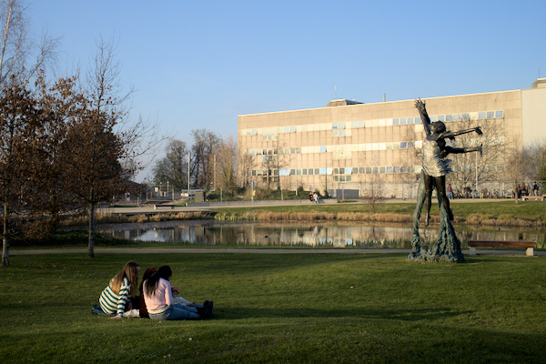
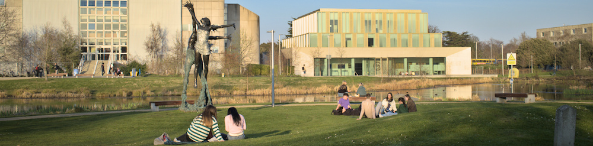

Introduction
“There is an important role to be played by higher education institutions (HEIs) if they step up their commitment to all 17 SDGs through their teaching, research, and engagement with the economy and society”- UNESCO 2022
Institutes of higher education have been identified as critical actors in driving climate action in a closing window of opportunity to avoid catastrophic climate change 1 2 University faculty and researchers are at the forefront of advancing the knowledge frontier of the drivers and impacts of the climate crisis and adaptation and mitigation strategies. Further, IHEs are tasked with educating and supporting future leaders who will need to deal with the long-term legacy of environmental degradation and have a key role to play in supporting advocacy for transformative social change 3.
A growing scholarship is conceptualizing how IHEs can be most useful as constructive actors in a time-bound emergency such as climate change4. Thousands of universities, including Irish HEIs, have joined campaigns are responding by made emergency declarations5 and the sector has identified climate change and biodiversity loss as a priority focus6.

However, many argue that IHE’s response to the climate crisis has not been commensurate to the scale of the challenge7. Some argue that universities’ efforts comprise too many ‘bottom up’, unsupported efforts8 and the public declarations have not translated into systemic change. With the intensification of the environmental crises demand for change is intensifying. For example, a recent SDG values report by the Times Higher Education (THE) suggests that students strongly value climate action, quality education and strong institutions, and 82% of them felt it was important for sustainability to be embedded in their everyday lives9.
A recent survey by ECO UNESCO with young people in Ireland found an overwhelming majority (93%) wanted climate action to be a larger part of their educational experience Further, most respondents expressed anxiety about climate change, an interest in green jobs and a desire for their places of work or study to be more environmentally friendly10. This is in keeping with recent research in the United Kingdom, which found that one in three 18–24-year-olds had turned down a job because the company’s Environmental, Social and Governance (ESG) commitments were not in line with their values11. Students are also exerting pressure for action through their activism including the Fridays for the Future, the Fossil Fuel Divestment movements12.
Similarly, staff are increasgly calling on IHE leadership to respond in more concrete ways to an escalating crisis13. To varying extents IHE sector is making increasing efforts to respond. For example, performance in meeting SDG targets has been appraised by a growing number of academic ranking agencies including the prestigious Times Higher Education rankings.
University College Dublin

University College Dublin has stated its climate ambitions in its organizational mission statements and action plans. acknowledged the need to ‘live sustainably without degrading its shared planet’ and celebrated UCD’s ‘long-standing commitment to sustainability’ 14 Specifically, commitment towards a sustainable future is at the core of UCD’s Strategic Plan looking to embed the principles of sustainability in the University community through research and teaching, promoting research that advances the SDGs including SDG13 Climate Action. A key indicator for this goal is building knowledge and capacity to meet climate change by raising awareness and improving education. Further UCD and each publicly funded IHEs are considered a ‘public sector body’ under the Climate Action Plan, Therefore, the organization is expected to act as a leader in climate action as noted in the 2023 plan (p.103) “We will lead by example, embedding climate action as a central value across all public sector organizations, relentlessly focusing on continuous improvements that deliver real progress”15. This year UCD rose 12 points to No. 22 in the Times Higher Education Impact Rankings for its commitment to SDGs. Clearly, momentum is building.
Aims of the study
As the University, implements changes to meet the evolving needs of its constituents, engagement with ongoing the stakeholders is critical To this end, the College of Social Sciences and Law provided our research team with funding to investigate students’ understandings of, attitudes towards and actions against climate change.
Research questions
- Do UCD undergraduate students possess basic knowledge about the underlying drivers and impacts of climate change?
- Are students satisfied with the amount of current teaching at the university about climate change?
- What is the level of eco-anxiety among undergraduate students at UCD?
- What portion of the students are involved in some form of environmental activism?
- How can the College /University support students who want to become more engaged in environmental issues?
The project was based on a collaboration between the School of Education and the School of Social policy, Social work and Social justice Where possible, we used to establish psychometric scales that have been validated for use with student populations. For context, we compare the students’ scores across key metrics to those of Irish adult and or youth populations.
Footnotes
ALLEA, “Towards Climate Sustainability of the Academic System in Europe and Beyond”; UNESCO, “Beyond Limits. New Ways to Reinvent Higher Education. Working Document for the World Higher Education Conference. 18-20 May 2022.”↩︎
ALLEA, “Towards Climate Sustainability of the Academic System in Europe and Beyond”; UNESCO, “Beyond Limits. New Ways to Reinvent Higher Education. Working Document for the World Higher Education Conference. 18-20 May 2022.”↩︎
Gardner et al., “From Publications to Public Actions”; Kelly et al., “Education in a Warming World.”↩︎
McCowan, “The Impact of Universities on Climate Change: A Theoretical Framework.”↩︎
“Current Signatories for Race to Zero for Universities and Colleges”; “EAUC The Allance for Sustainable Leadership in Education.”↩︎
UNESCO, “Beyond Limits. New Ways to Reinvent Higher Education. Working Document for the World Higher Education Conference. 18-20 May 2022.”↩︎
Maxwell, “How Universities Have Betrayed Reason and Humanity—And What’s to Be Done About It.”↩︎
Shiel et al., “Evaluating the Engagement of Universities in Capacity Building for Sustainable Development in Local Communities.”↩︎
Times Higher Education (THE), “Times Higher Education Consultancy Report: Students, Sustainability and Study Choices.”↩︎
ECO UNESCO, “Youth Climate Voices: Youth Climate Justice Survey.”↩︎
KPMG, “Climate Quitting - Younger Workers Voting with Their Feet on Employer’s ESG Commitments - KPMG United Kingdom.”↩︎
White et al., “School Strikers Enacting Politics for Climate Justice.”↩︎
Gardner et al., “From Publications to Public Actions.”↩︎
University College Dublin, “Rising the Future UCD Strategy 2020-2024.”↩︎
Government of Ireland, “Climate Action Plan 2023 Changing Ireland for the Better.”↩︎